¿Cómo se enseña, se siente y se defiende la soberanía desde la virtualidad y la ruralidad? Esta fue la premisa central con la que el Área de Educación Científica y Tecnológica impulsó una propuesta integral destinada a las y los estudiantes, transformando la conmemoración del 2 de abril, “Día del Veterano y de los Caídos en la Guerra de Malvinas”, en un puente activo entre la memoria histórica, la ciencia, la geografía y el compromiso ciudadano.
Un recorrido en tres momentos: del mapa a la acción
La iniciativa se estructuró a través de un recorrido pedagógico dinámico dividido en tres estaciones conceptuales y prácticas:
- ¿Cuál es el verdadero tamaño de la Argentina? A través de la revisión del mapa bicontinental, la propuesta invitó a dimensionar nuestro territorio más allá de la porción continental, integrando el Mar Argentino, las Islas del Atlántico Sur y el sector antártico. Las estaciones de reflexión desafiaron a los y las estudiantes a pensar cómo la ciencia, la tecnología y el conocimiento estratégico son las herramientas fundamentales para defender la soberanía en el siglo XXI.
- Lugares de la memoria. La comunidad se propuso indagar en cómo la historia habita en los espacios cotidianos (monumentos, placas, nombres de calles o escuelas) y llevar la reflexión a la práctica mediante la creación de mojones locales. Con el cálculo de distancias reales hacia las islas utilizando herramientas geográficas y la construcción de siluetas con elementos del entorno natural, cada sede visibilizó la cercanía simbólica con nuestro suelo austral.
- Cartas por la memoria y la soberanía. Inspirados en las misivas que en 1982 cruzaron el océano para transformarse en abrigo frente a la incertidumbre, los y las estudiantes redactaron cartas dirigidas al presente y a los ex combatientes. El ejercicio combinó la reflexión sobre la identidad nacional con compromisos concretos orientados a mantener viva la causa, combatir la desinformación y sostener el reclamo por la vía del diálogo y la paz.
Producciones de las y los estudiantes
Las producciones que se comparten a continuación recogen el trabajo de las distintas sedes y grupos: infografías, mapas, mojones, dibujos, cartas y reflexiones elaboradas en el marco de esta propuesta. Se incluyen también las publicaciones textuales del muro colaborativo.


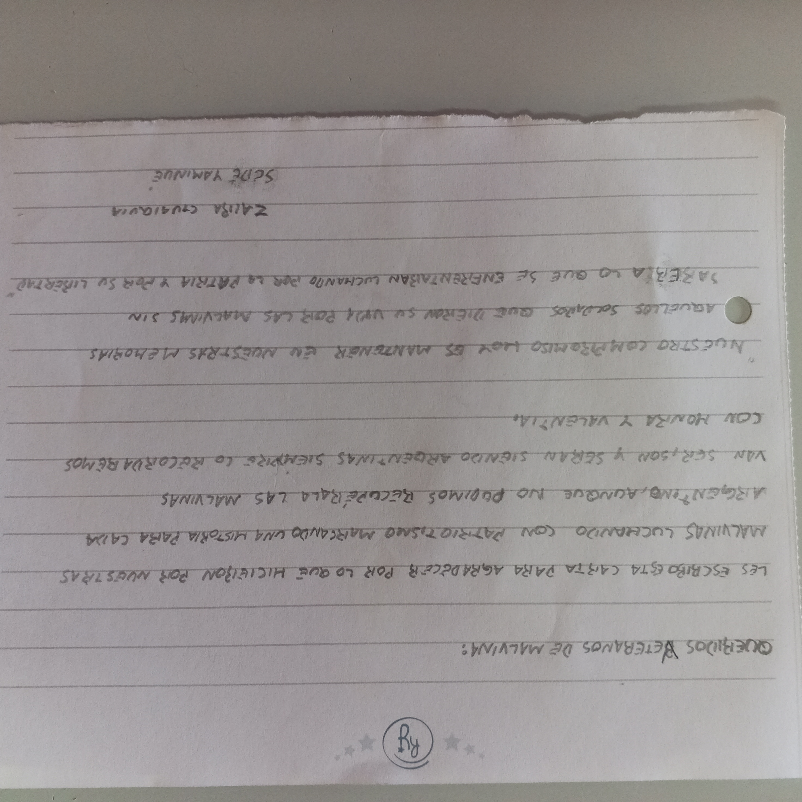
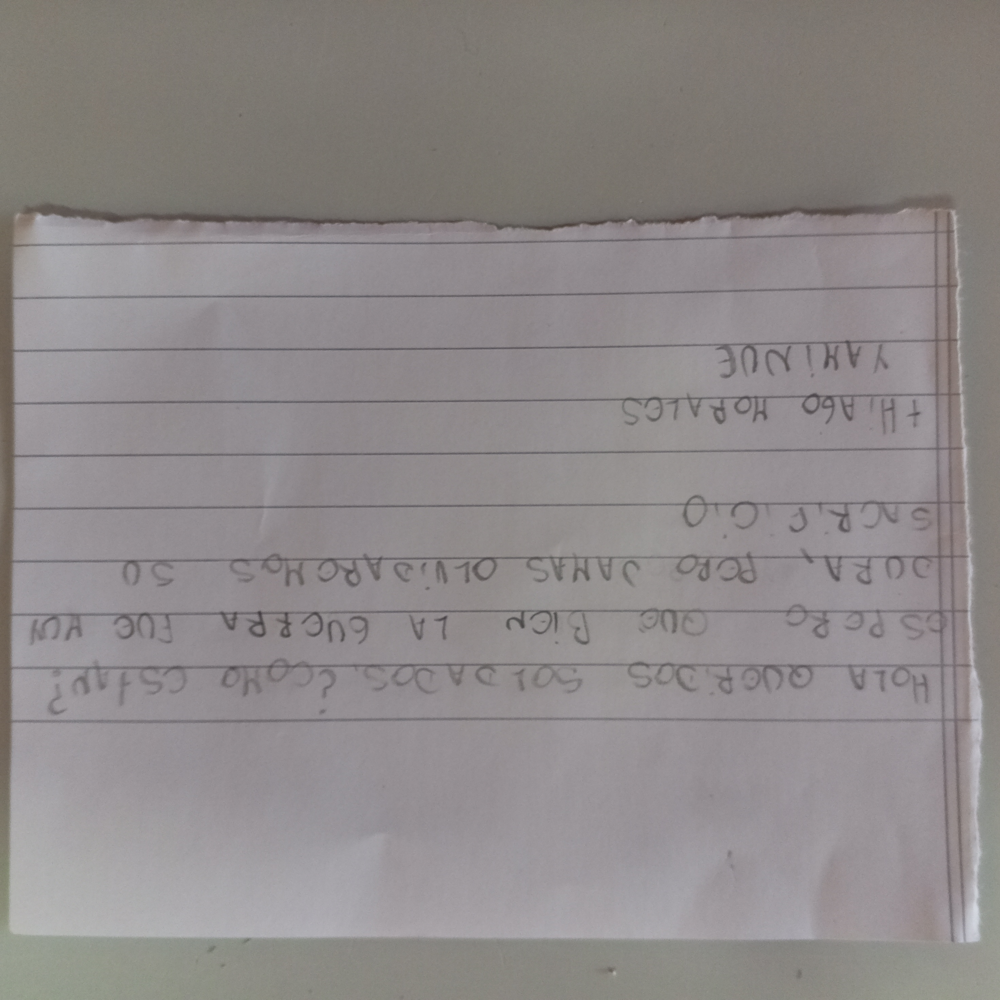
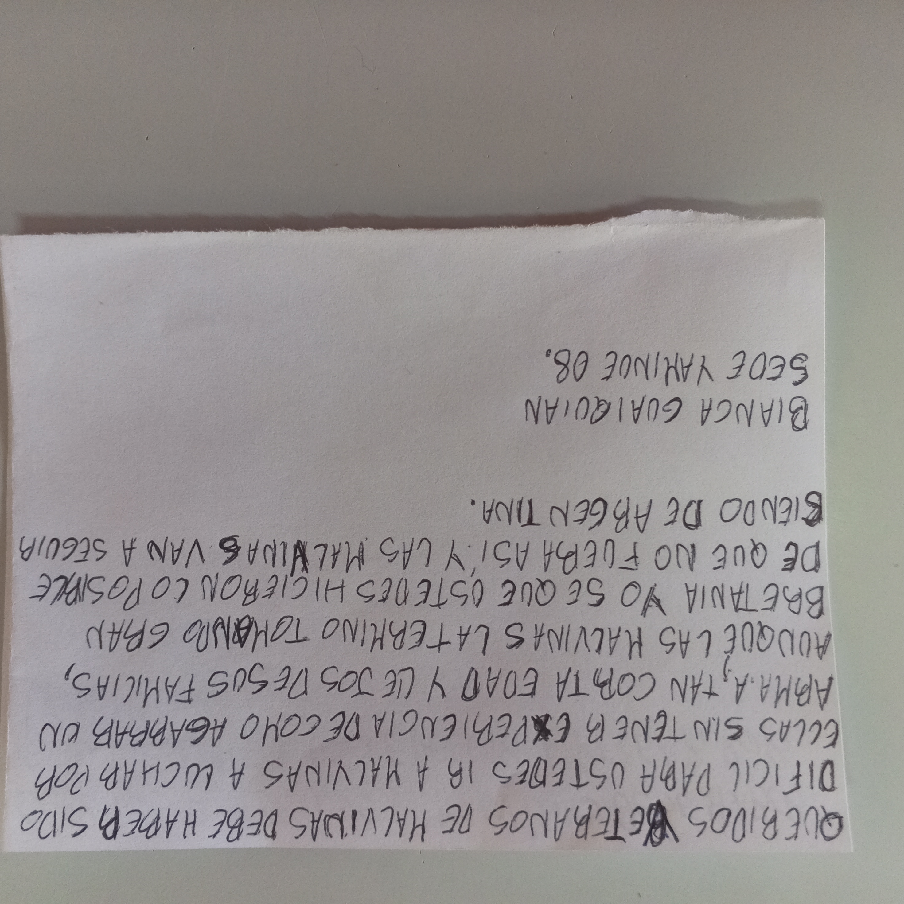
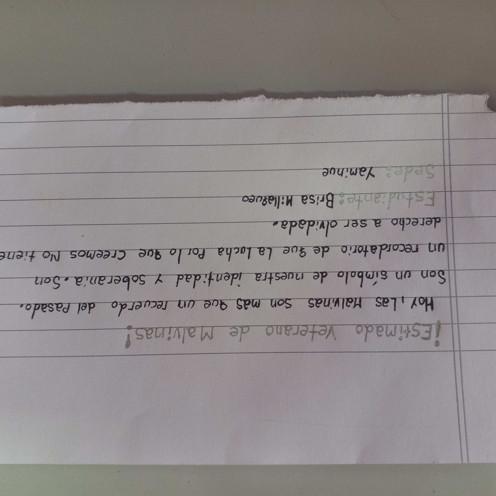
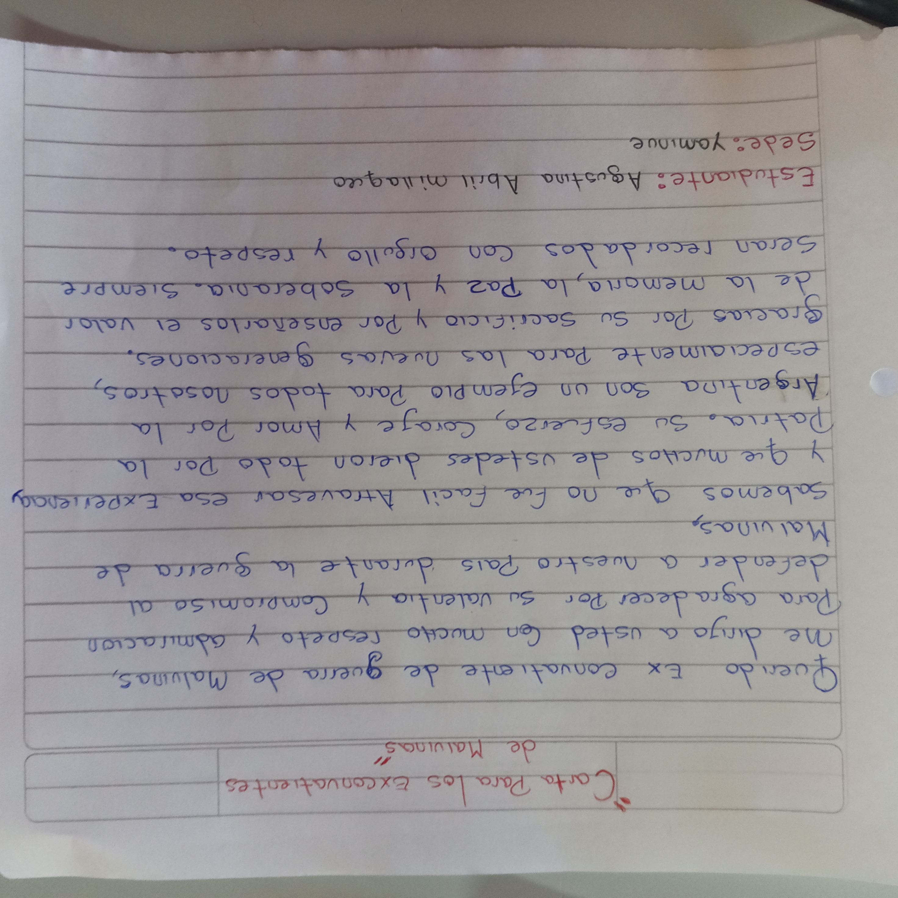
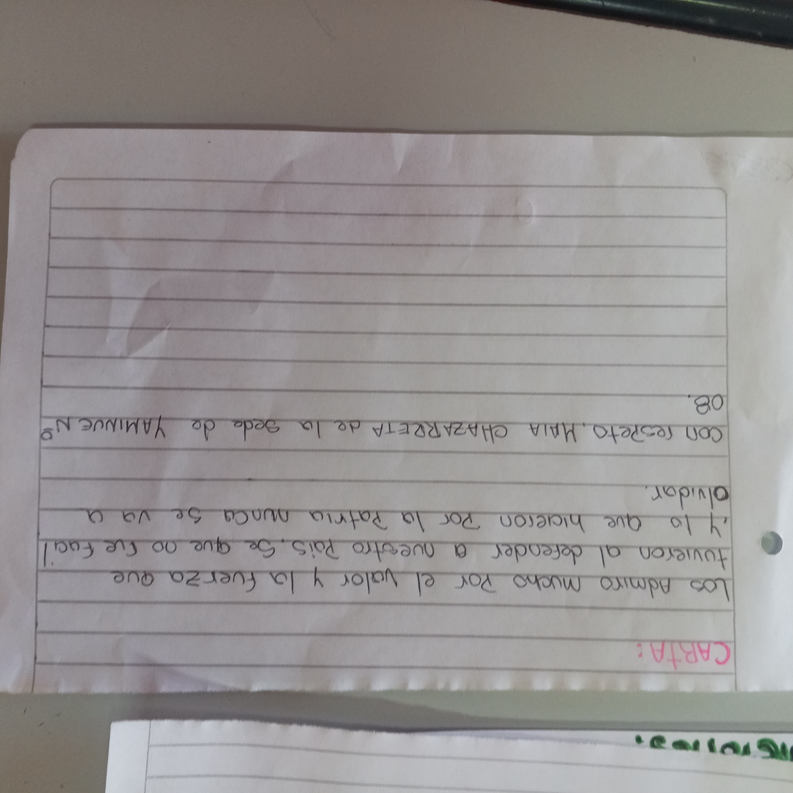
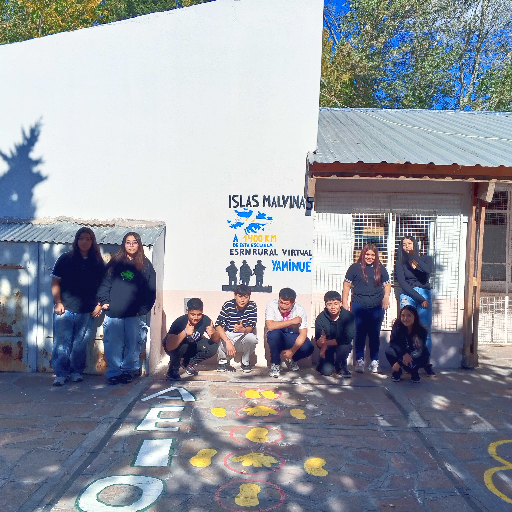


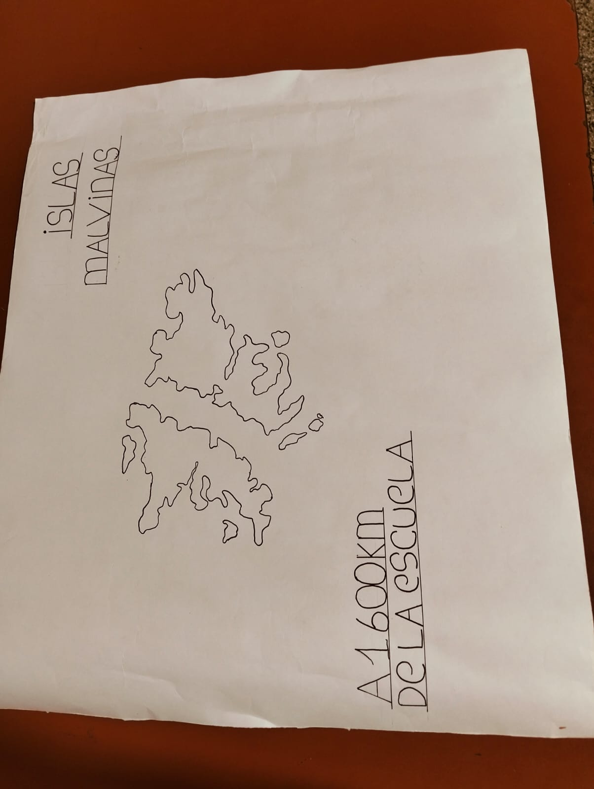


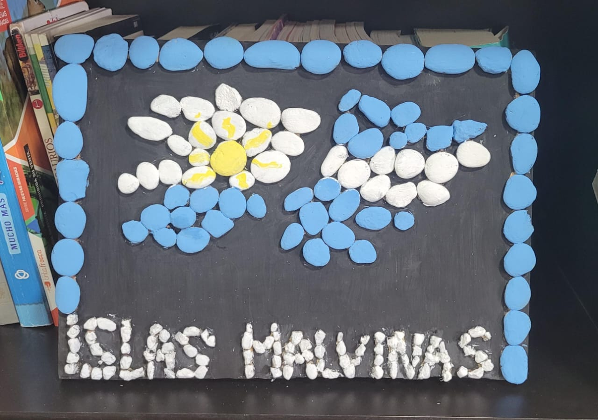

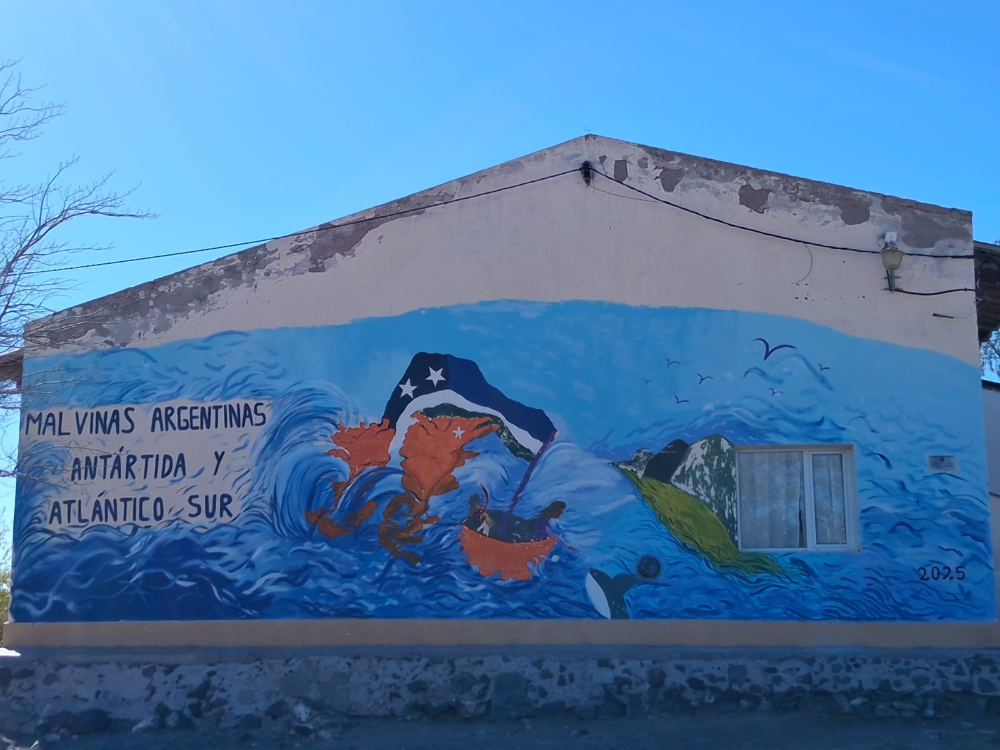

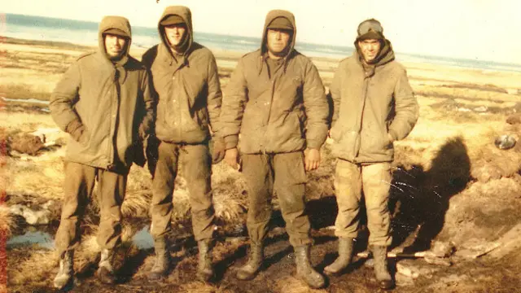
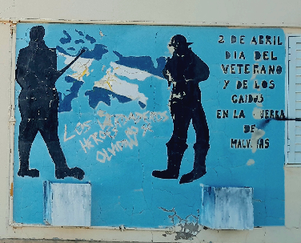
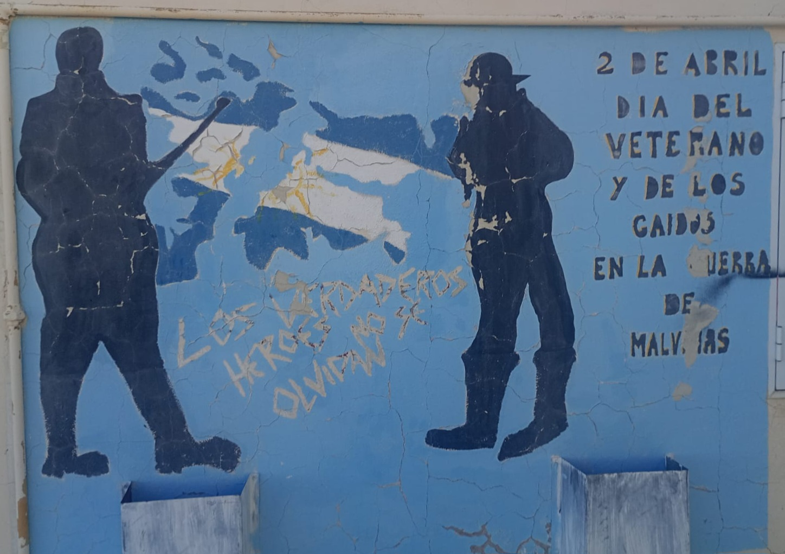
Ciencia, tecnología y memoria viva
Desde el Área de Educación Científica y Tecnológica se destacó que la propuesta buscó trascender el mero efeméride escolar, propiciando un espacio donde las tecnologías digitales, los recursos cartográficos y el pensamiento crítico se unieron para fortalecer nuestra identidad colectiva.
Las producciones finales fueron compartidas en un muro digital colaborativo, consolidando un archivo escolar vivo que será puesto a disposición de centros de veteranos. Una muestra clara de que, desde cada rincón de nuestra ruralidad virtual, las Malvinas siguen estando presentes.